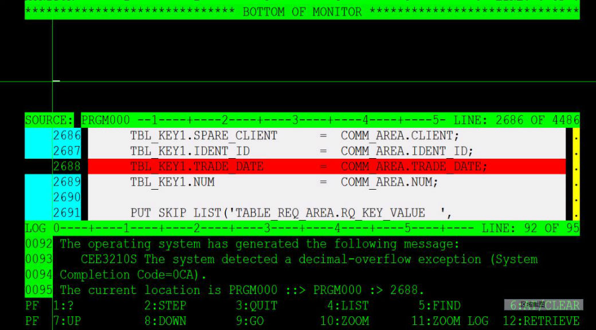

用PIC型中间变量解决Fixed赋值溢出abend
2012-01-11
我在Debug一个PLI程序PRGM000的时候遇到了一个CEE34A abend，报的错误信息如下：
You were prompted because the CEE34A condition was raised in your program. CEE34A is a severity or class 3 condition. The operating system has generated the following message: CEE3210S The system detected a decimal-overflow exception (System Completion Code=0CA). The current location is PRGM000 ::> PRGM000 :> 2688.
不废话，直接上截图： 
从图上可以看出，出错的语句是：TBL_KEY1.TRADE_DATE = COMM_AREA.TRADE_DATE
我们来看二者的定义
COMM_AREA.TRADE_DATE的定义
1 COMM_AREA
2 USER_AREA,
...
5 TRADE_DATE FIXED(9), /* 20110901 */
...;
TBL_KEY1.TRADE_DATE的定义
```rubyDCL 1 TBL_KEY1
3 SPARE_CLIENT CHAR(4),
3 IDENT_ID CHAR(9),
3 TRADE_DATE FIXED(7),
3 NUM FIXED(3);
所以很明显，发生abend的原因是把一个`FIXED(9)`的值赋给了一个`FIXED(7)`的变量，从而产生了溢出。
###下面是解决办法:
定义一个**PIC类型**的中间变量 **`PIC_TRADE_DATE_9`** 做转换桥梁：
```ruby
DCL PIC_TRADE_DATE_9 PIC '(9)9' INIT(0);
PIC_TRADE_DATE_9 = COMM_AREA.TRADE_DATE;
(值:020110901) (值：20110901)
TBL_KEY1.TRADE_DATE = SUBSTR (PIC_TRADE_DATE_9,4,6);
(值：110901) (值：110901)
到这里，问题已经得到解决。
Category: articles Tagged: z/OS